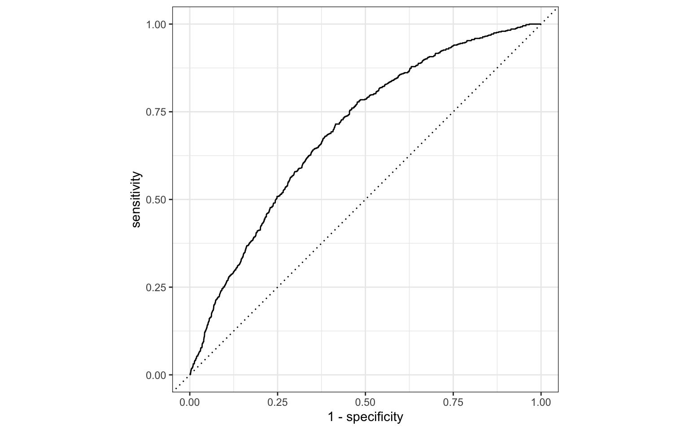
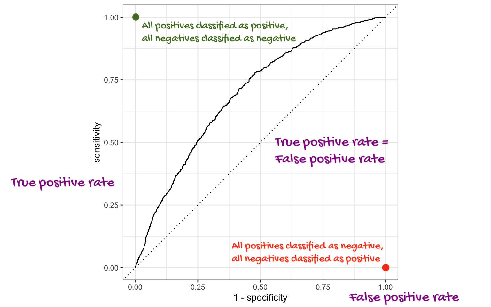

Overfitting and spending your data
Modeling and inference
Setup
Packages
- tidyverse for data wrangling and visualization
- tidymodels for modeling
- forested for data
Data
The U.S. Forest Service maintains machine learning models to predict whether a plot of land is “forested.”
This classification is important for research, legislation, land management, etc. purposes.
Plots are typically remeasured every 10 years.
The
foresteddataset contains the most recent measurement per plot.
Data: forested
# A tibble: 7,107 × 19
forested year elevation eastness northness roughness
<fct> <dbl> <dbl> <dbl> <dbl> <dbl>
1 Yes 2005 881 90 43 63
2 Yes 2005 113 -25 96 30
3 No 2005 164 -84 53 13
4 Yes 2005 299 93 34 6
5 Yes 2005 806 47 -88 35
6 Yes 2005 736 -27 -96 53
7 Yes 2005 636 -48 87 3
8 Yes 2005 224 -65 -75 9
9 Yes 2005 52 -62 78 42
10 Yes 2005 2240 -67 -74 99
# ℹ 7,097 more rows
# ℹ 13 more variables: tree_no_tree <fct>, dew_temp <dbl>,
# precip_annual <dbl>, temp_annual_mean <dbl>,
# temp_annual_min <dbl>, temp_annual_max <dbl>,
# temp_january_min <dbl>, vapor_min <dbl>,
# vapor_max <dbl>, canopy_cover <dbl>, lon <dbl>,
# lat <dbl>, land_type <fct>Data: forested
Rows: 7,107
Columns: 19
$ forested <fct> Yes, Yes, No, Yes, Yes, Yes, Yes,…
$ year <dbl> 2005, 2005, 2005, 2005, 2005, 200…
$ elevation <dbl> 881, 113, 164, 299, 806, 736, 636…
$ eastness <dbl> 90, -25, -84, 93, 47, -27, -48, -…
$ northness <dbl> 43, 96, 53, 34, -88, -96, 87, -75…
$ roughness <dbl> 63, 30, 13, 6, 35, 53, 3, 9, 42, …
$ tree_no_tree <fct> Tree, Tree, Tree, No tree, Tree, …
$ dew_temp <dbl> 0.04, 6.40, 6.06, 4.43, 1.06, 1.3…
$ precip_annual <dbl> 466, 1710, 1297, 2545, 609, 539, …
$ temp_annual_mean <dbl> 6.42, 10.64, 10.07, 9.86, 7.72, 7…
$ temp_annual_min <dbl> -8.32, 1.40, 0.19, -1.20, -5.98, …
$ temp_annual_max <dbl> 12.91, 15.84, 14.42, 15.78, 13.84…
$ temp_january_min <dbl> -0.08, 5.44, 5.72, 3.95, 1.60, 1.…
$ vapor_min <dbl> 78, 34, 49, 67, 114, 67, 67, 31, …
$ vapor_max <dbl> 1194, 938, 754, 1164, 1254, 1331,…
$ canopy_cover <dbl> 50, 79, 47, 42, 59, 36, 14, 27, 8…
$ lon <dbl> -118.6865, -123.0825, -122.3468, …
$ lat <dbl> 48.69537, 47.07991, 48.77132, 45.…
$ land_type <fct> Tree, Tree, Tree, Tree, Tree, Tre…Data: forested
[1] "forested" "year"
[3] "elevation" "eastness"
[5] "northness" "roughness"
[7] "tree_no_tree" "dew_temp"
[9] "precip_annual" "temp_annual_mean"
[11] "temp_annual_min" "temp_annual_max"
[13] "temp_january_min" "vapor_min"
[15] "vapor_max" "canopy_cover"
[17] "lon" "lat"
[19] "land_type" Outcome and predictors
- Outcome:
forested- Factor,YesorNo
-
Predictors: 18 remotely-sensed and easily-accessible predictors:
numeric variables based on weather and topography
categorical variables based on classifications from other governmental organizations
?forested
Should we include a predictor?
To determine whether we should include a predictor in a model, we should start by asking:
Is it ethical to use this variable? (Or even legal?)
Will this variable be available at prediction time?
Does this variable contribute to explainability?
Data splitting and spending
We’ve been cheating!
So far, we’ve been using all the data we have for building models. In predictive contexts, this would be considered cheating.
Evaluating model performance for predicting outcomes that were used when building the models is like evaluating your learning with questions whose answers you’ve already seen.
Spending your data
For predictive models (used primarily in machine learning), we typically split data into training and test sets:

The training set is used to estimate model parameters.
The test set is used to find an independent assessment of model performance.
Warning
Do not use, or even peek at, the test set during training.
How much to spend?
The more data we spend (use in training), the better estimates we’ll get.
Spending too much data in training prevents us from computing a good assessment of predictive performance.
Spending too much data in testing prevents us from computing a good estimate of model parameters.
The initial split
The default split is 75% training, 25% testing.
Setting a seed
What does set.seed() do?
To create that split of the data, R generates “pseudo-random” numbers: while they are made to behave like random numbers, their generation is deterministic given a “seed”.
This allows us to reproduce results by setting that seed.
Which seed you pick doesn’t matter, as long as you don’t try a bunch of seeds and pick the one that gives you the best performance.
Accessing the data
The training set
# A tibble: 5,330 × 19
forested year elevation eastness northness roughness
<fct> <dbl> <dbl> <dbl> <dbl> <dbl>
1 Yes 2013 315 -17 98 92
2 No 2018 374 93 -34 23
3 No 2017 377 44 -89 1
4 Yes 2013 541 31 -94 139
5 Yes 2017 680 14 -98 20
6 Yes 2017 1482 76 -64 43
7 No 2020 84 42 -90 12
8 Yes 2011 210 34 93 16
9 No 2020 766 14 98 20
10 Yes 2013 1559 98 16 79
# ℹ 5,320 more rows
# ℹ 13 more variables: tree_no_tree <fct>, dew_temp <dbl>,
# precip_annual <dbl>, temp_annual_mean <dbl>,
# temp_annual_min <dbl>, temp_annual_max <dbl>,
# temp_january_min <dbl>, vapor_min <dbl>,
# vapor_max <dbl>, canopy_cover <dbl>, lon <dbl>,
# lat <dbl>, land_type <fct>The testing data
üôà
Exploratory data analysis
Initial questions
What’s the distribution of the outcome,
forested?What’s the distribution of numeric variables like
precip_annual?How does the distribution of forested differ across the categorical and numerical variables?
Which dataset should we use for the exploration? The entire data forested, the training data forested_train, or the testing data forested_test?
forested
What’s the distribution of the outcome, forested?
precip_annual
What’s the distribution of precip_annual?

forested and precip_annual
forested and precip_annual

forested and tree_no_tree
forested and lat / lon
Terminology
Recap: False negative and positive
False negative rate is the proportion of actual positives that were classified as negatives.
False positive rate is the proportion of actual negatives that were classified as positives.
Recap: Sensitivity
Sensitivity is the proportion of actual positives that were correctly classified as positive.
Also known as true positive rate and recall
Sensitivity = 1 − False negative rate
Useful when false negatives are more “expensive” than false positives
Recap: Specificity
Specificity is the proportion of actual negatives that were correctly classified as negative
Also known as true negative rate
Specificity = 1 − False positive rate
ROC curve
The receiver operating characteristic (ROC) curve allows to assess the model performance across a range of thresholds.

ROC curve
Which corner of the plot indicates the best model performance?

Next steps
Next steps
Fit models on training data
Make predictions on testing data
-
Evaluate predictions on testing data:
- Linear models: R-squared, adjusted R-squared, RMSE (root mean squared error), etc.
- Logistic models: False negative and positive rates, AUC (area under the curve), etc.
Make decisions based on model predictive performance, validity across various testing/training splits (aka “cross validation”), explainability
Note
We will only learn about a subset of these in this course, but you can go further into these ideas in other regression and machine learning courses.